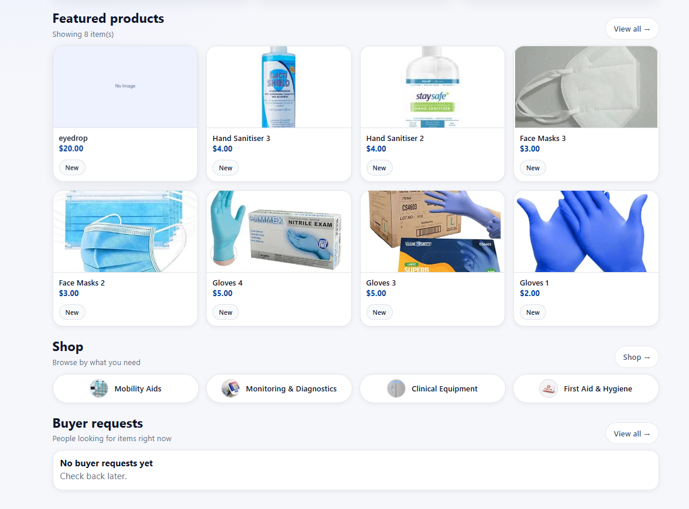
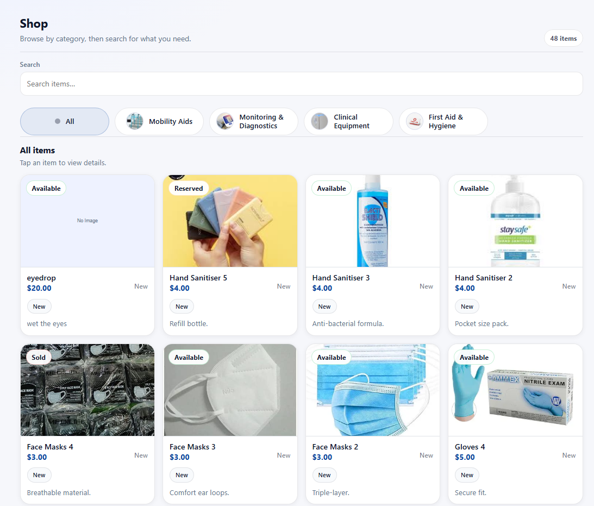

SecondAid
Responsive Medical E-Commerce Website

Overview
SecondAid is a full-stack e-commerce solution designed to make healthcare more accessible by providing a secure platform for buying and selling second-hand medical products. By integrating a robust backend with a user-friendly interface, the project ensures that life-saving equipment remains affordable and sustainable.
The Goal: To bridge the gap between medical affordability and web security, creating a high-trust marketplace for certified equipment.
Project Breakdown
Role & Tech
- Full-Stack Developer
- HTML, CSS, JavaScript
- RESTful APIs & Render
Process
I architected the database schema and backend logic first, then developed the clinical UI. Finally, I integrated them via APIs and deployed the full-stack app on Render for a live environment.
Key Takeaway
I learned the importance of server-side validation and data integrity, gaining experience in maintaining a 24/7 live web service.
Visuals


Related Projects

Sustainable Clothing Site
View Project